Harmless Until a Breadboard Appears
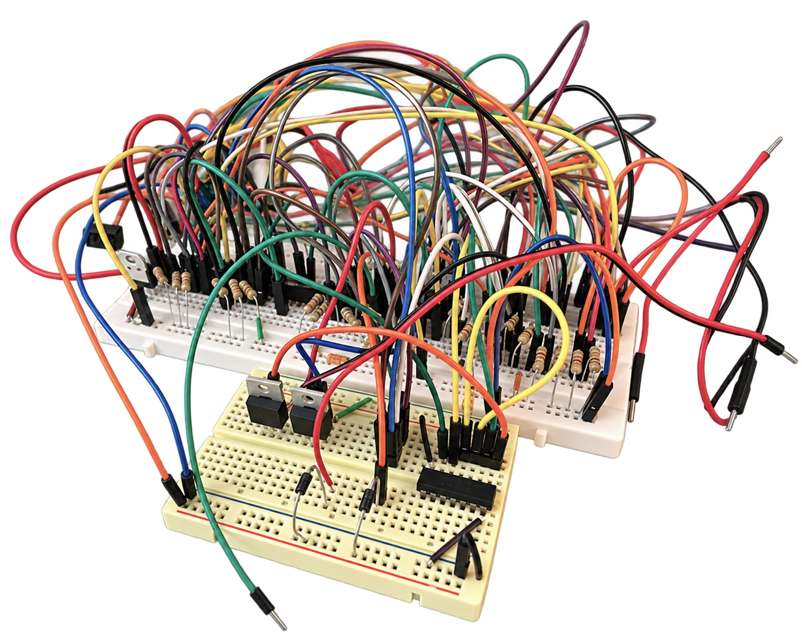
I never know what to call these—
objects
experiments
things with wires
I usually begin with an image or a feeling
then figure out what it needs
to move
glow
or respond
The Body
Sometimes the body becomes part of the circuit
fabric carries light
movement changes the image
and something worn
becomes something alive
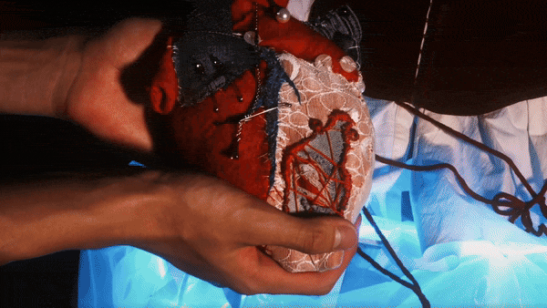
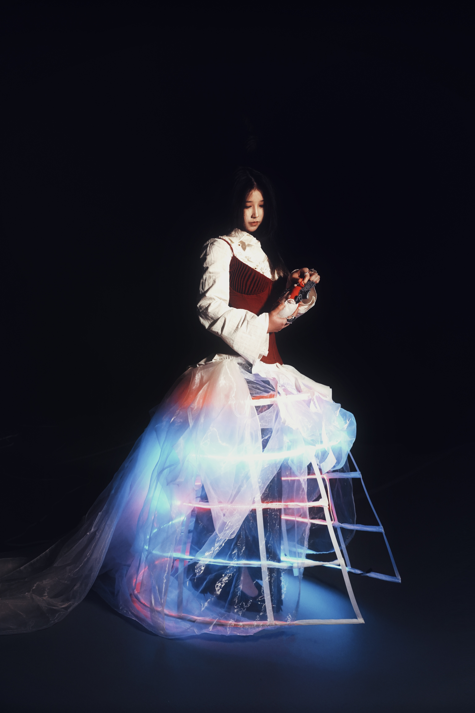
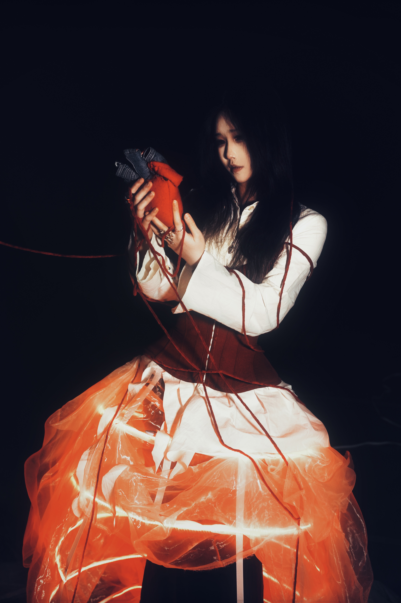
The Room
Then the work leaves the body
and enters the room
light lands on plates
objects become landscapes
and an ordinary table
begins behaving differently
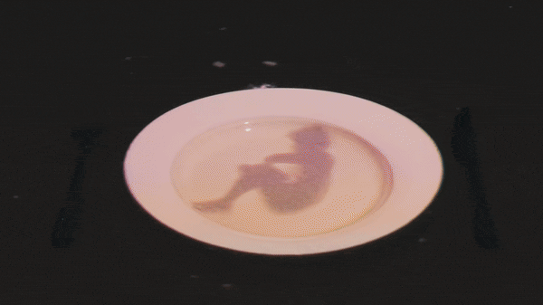
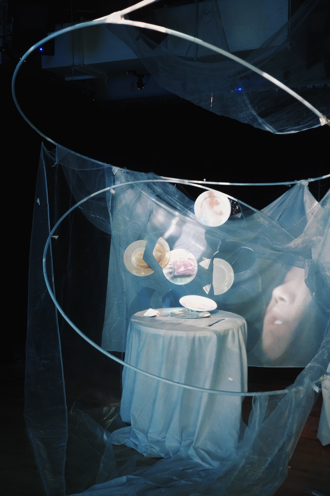
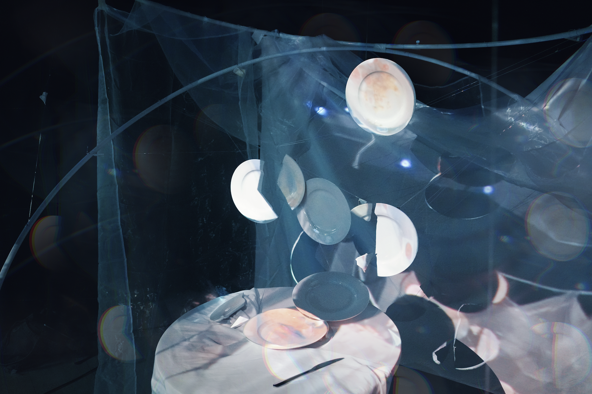
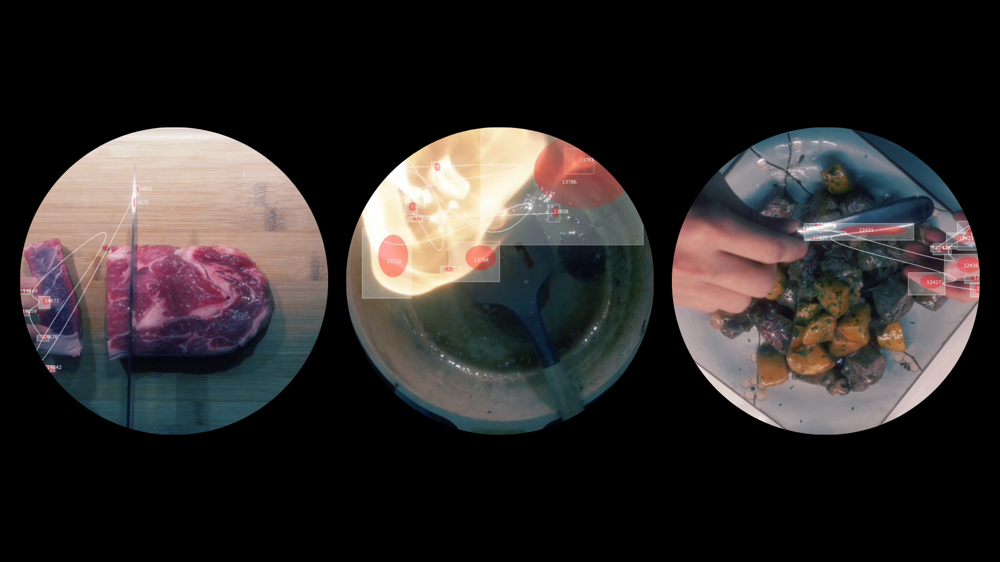
The City
Outside
the city is already interactive
people cross paths
disappear underground
and continue along lines
I can only briefly follow
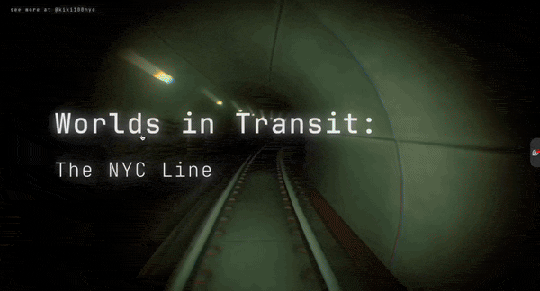
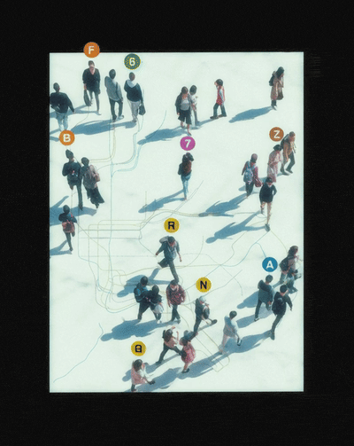
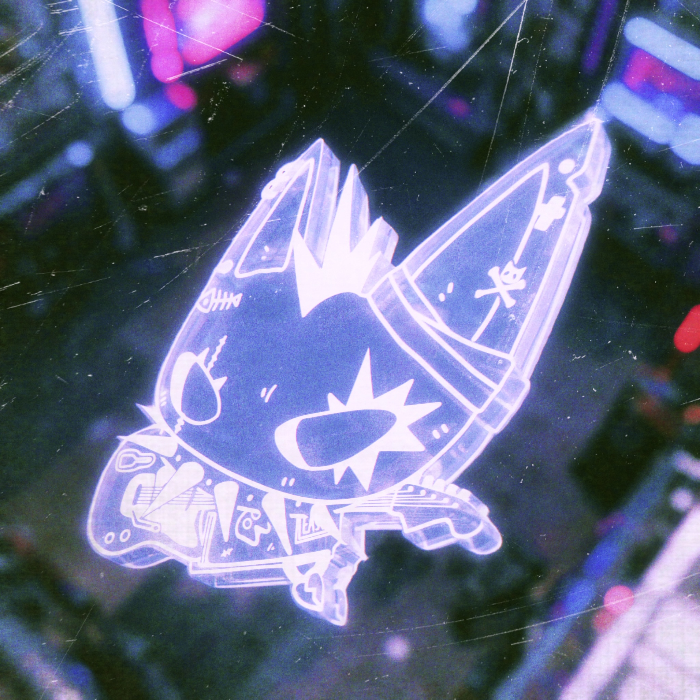
Gather Around
I like making objects
that bring people closer
something to hold
gather around
or understand together
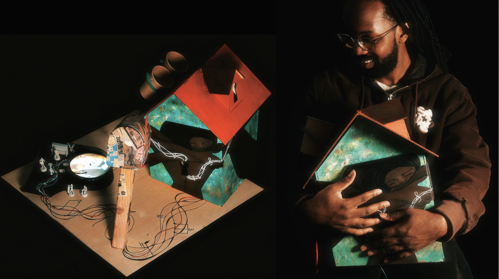
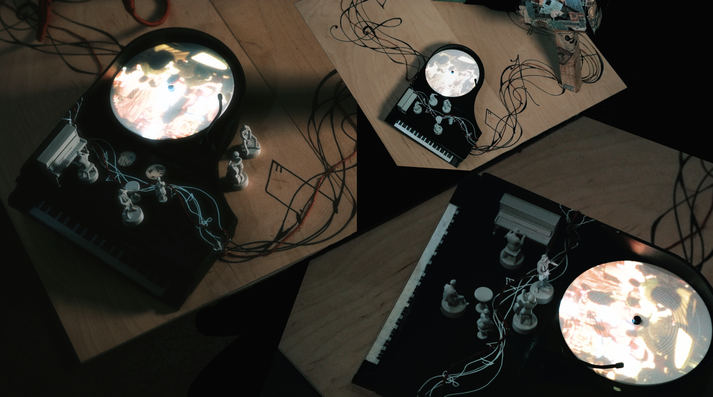
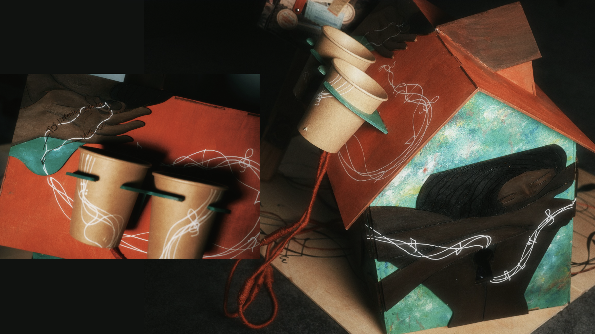
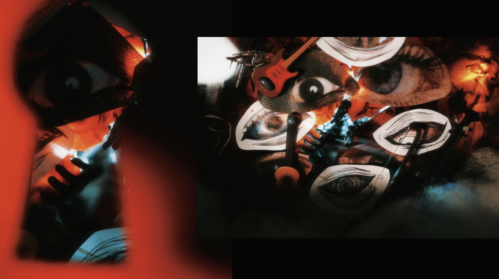
Another Life
An old screen
does not have to stay old
it can become a container
for another image
another world
another way of looking
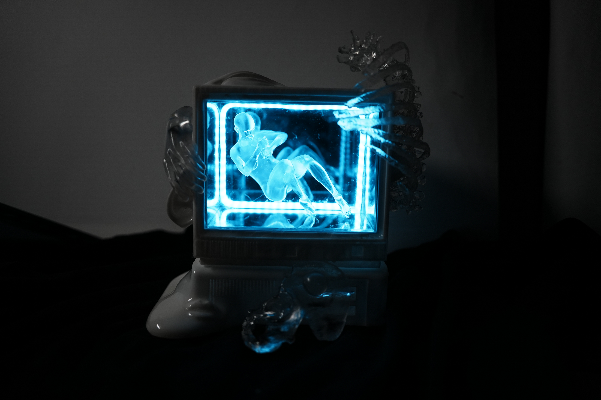
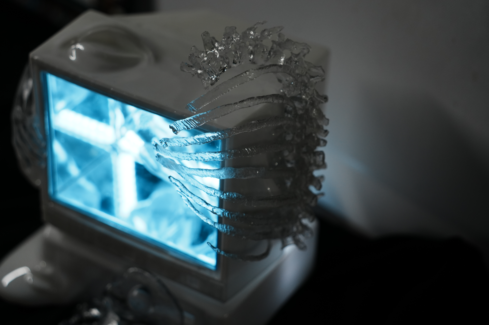
Inside the Screen
Sometimes the work has no physical body
only code
movement
and a world that exists
for as long as the screen is on
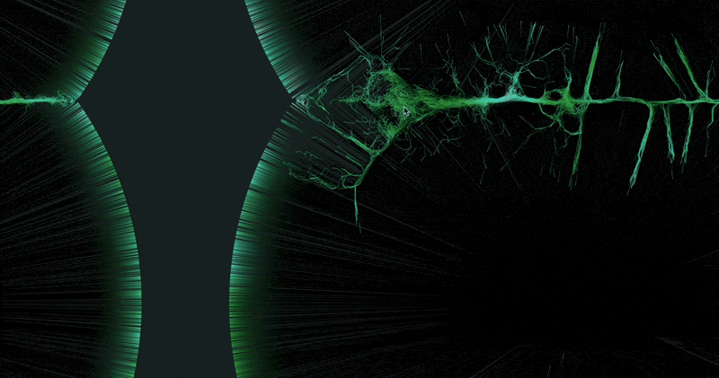
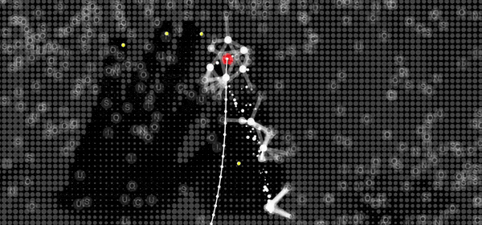
I use technology
when an idea needs more than an image
when it needs to move
react
or notice someone looking back
↩ put the wires back